各モデル・入力範囲で、15と16の両方が採点可能な同じ回答だけを比較。A0100とA0200を集計しています。
成分別グラフの縦軸は10ステップの絶対誤差合計を回答間で平均した値です（小さいほど良い）。10で割ると1ステップ平均MAEになります。roll・yawは最短角度差です。
概観図は誤差削減率。正・青が改善、0%・白が変化なし、負・赤が悪化です。形式失敗により列ごとの採用問題が異なるため、モデル間比較の母集団は必ずしも一致しません。
全体の形式成功数は15が53/60、16が48/60、共通有効回答は42件です。16の回帰係数には評価対象試合が含まれ、未知試合への汎化評価ではありません。
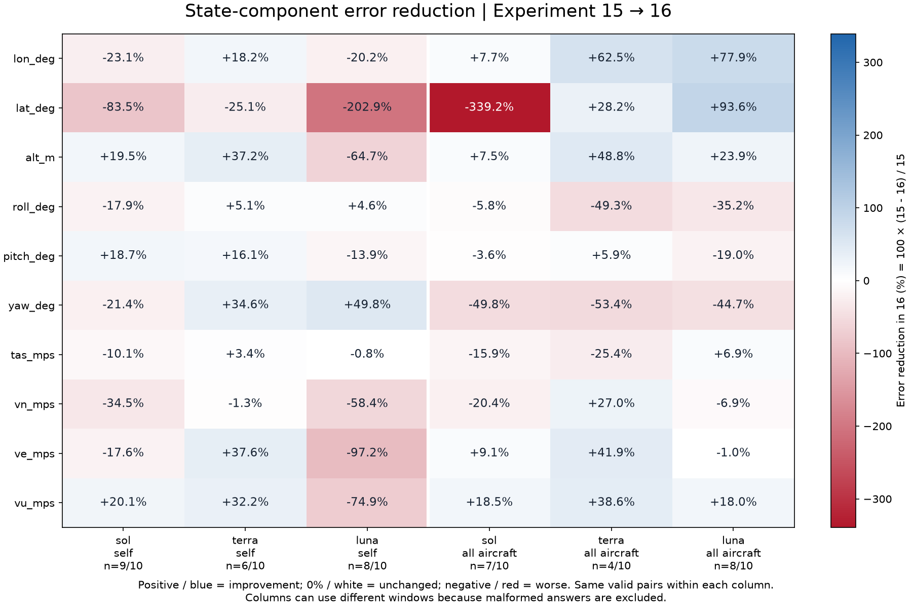
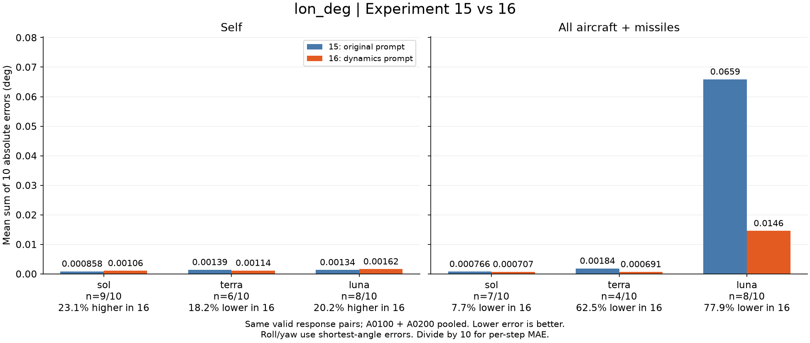
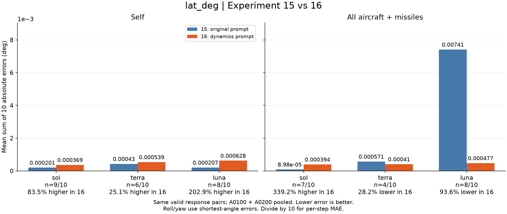
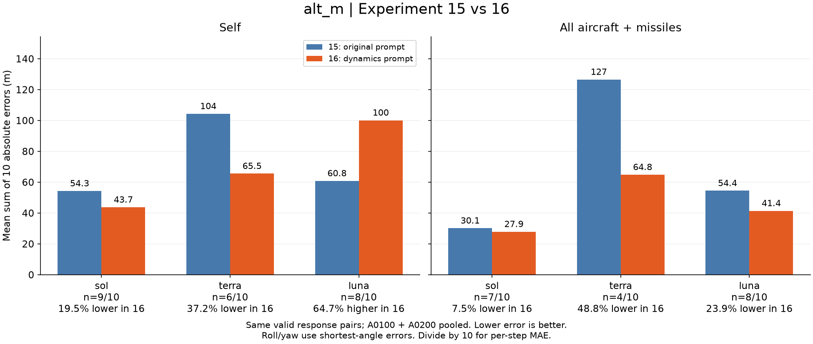
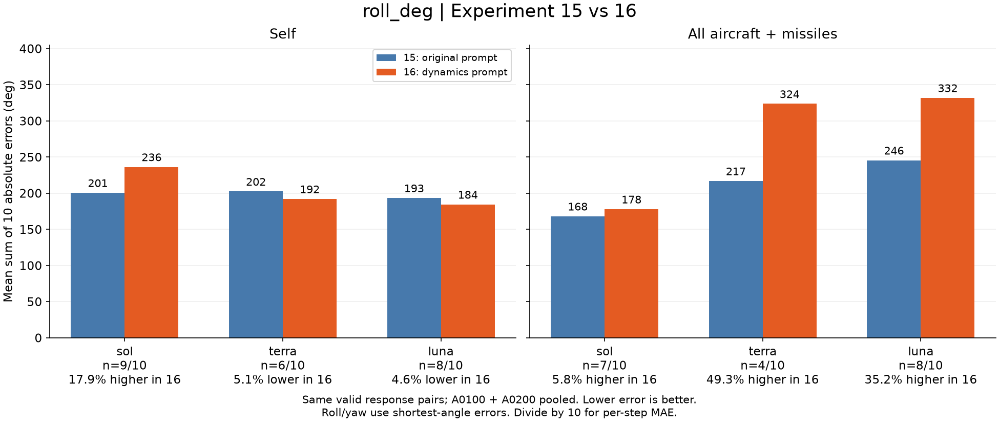
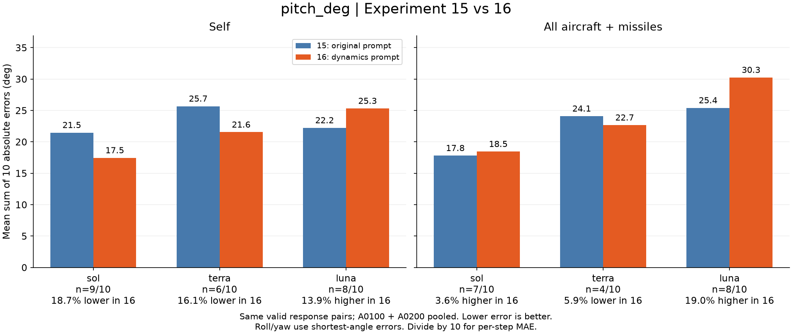
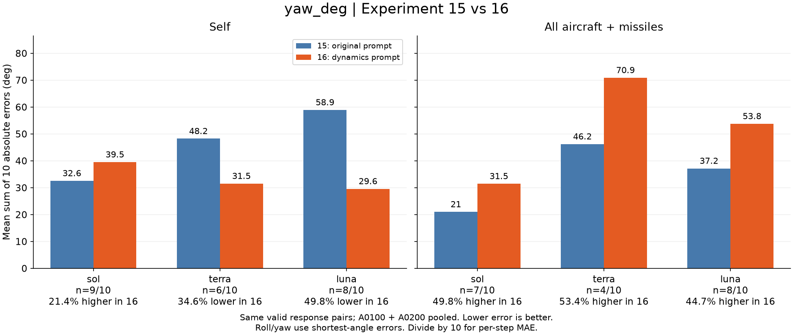
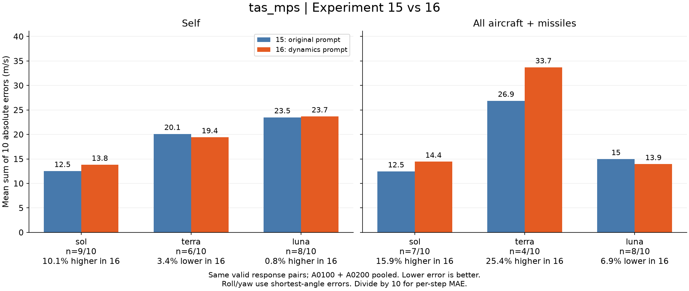
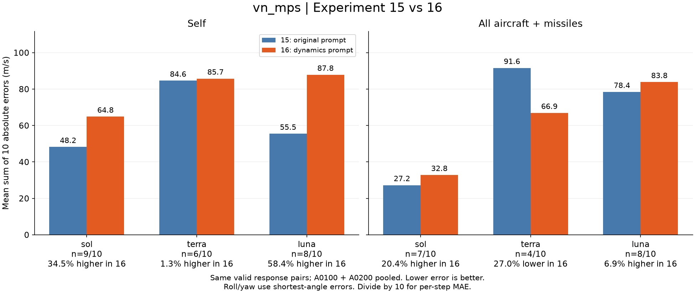
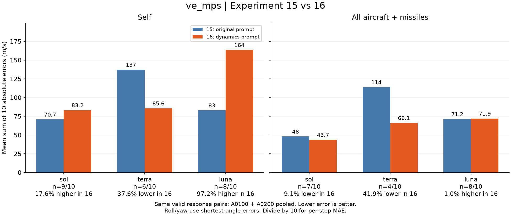
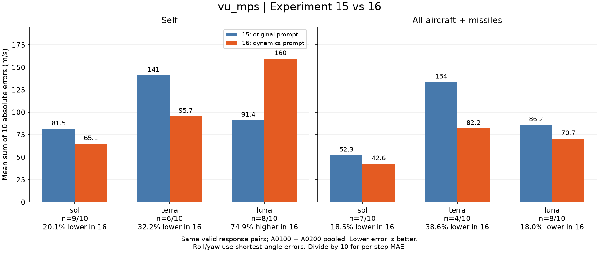